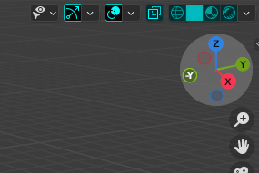

Deshacer se refiere a revertir la ultima accion realizada.
-
Para Deshacer puedes presionar el boton Deshacer, que se encuentra en la barra de herramientas
presionando edit.
-
Atajos: Ctrl + Z.
Rehacer se refiere a volver a aplicar una acción que se deshizo
previamente.
-
Para rehacer puedes presionar el botón Rehacer, que se encuentra en la barra de herramientas
presionando edit.
-
Atajo: Ctrl + Shift + Z.
La La selección múltiple de vértices en Blender es cuando seleccionas
varios vértices simultáneamente.
-
Para hacerlo, puedes usar los siguientes métodos:
-
Mantén presionada la tecla Shift y haz clic izquierdo en cada vértice que desees seleccionar.
-
Atajos y herramientas
-
B (pincel de seleccion) al arrastrar un area rectangular alrededor de los tertices que deseas
seleccionar.
-
C (Pincel de seleccion) al pintar sobre los vertices que deseas seleccionar
-
A al precionarla se seleccionando todos los objetos de la escena
Ocultar se refiere a hacer invisible un objeto en la vista 3D sin
eliminarlo.
-
En el outliner se encuntran un boton con forma de ojo, al darle click izquierdo se podra ocultar
y volviendole a dar se podra desocultar.
-
Para ocultar un objeto se puede hacer seleccionando un objeto y presionando la tecla H.
-
Para desocultar el objeto, presiona Alt+H.
shading en Blender se refieren a las formas en que se muestra
y calcula la iluminación en un objeto 3D.
-
En la esquina superior derecha se encuentran cuatro diferentes modos de shading.

-
Wireframe: Muestra el objeto como una malla de alambre sin superficies sólidas.
-
Solid: Muestra el objeto con colores sólidos sin considerar la iluminación.
-
Material: Muestra el objeto con los materiales aplicados, considerando la iluminación básica.
-
Rendered: Muestra una representación más realista del objeto, teniendo
en cuenta la iluminación global, sombras y texturas.
-
Atajos: Z